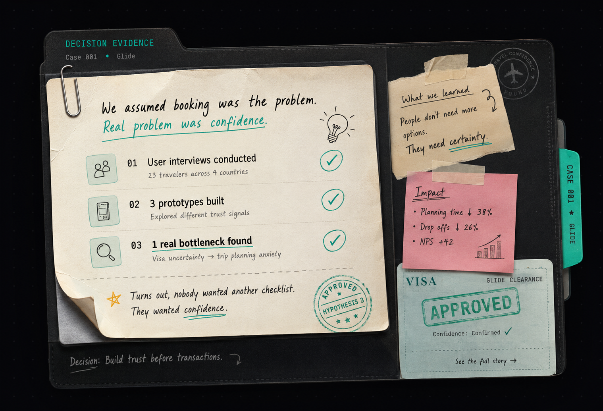

Every project below exists because I was wrongMost products don't fail because of bad execution. They fail because the first assumption survived too long. first.
You'll probably disagree with at least one decision. Good. So did I.

Every project below followed this process. Not because I planned it. Because every shortcut failed.
Click Observe above to start. Each step unlocks the next, in the order the decisions actually happened.
What problem are we actually solving?
On Glide: travelers were opening more than six tabs just to plan one trip.
What don't we know yet?
Was booking the pain? Or was it not knowing if the trip would even be allowed?
What are three real ways this could work?
A comparison site. An itinerary assistant. A unified checkout.
Which idea sounds exciting but fails under evidence?
"Another comparison site."
REJECTED
This was my favorite idea.
Which trade-off are we willing to accept?
One unified flow, even if it meant rebuilding checkout from scratch.
How will we know this worked?
Planning time, not signups.
What would change our mind?
Visa confidence mattered more than price comparison ever did.
↺ Back to Observe. Product thinking isn't linear, it just looks that way in hindsight.
That's the chain behind everything below, including the parts I got wrong.
Which step in this chain do most product teams skip first, under pressure?
Tap "Enter the Investigation" on either one. The alternatives I rejected are the actual point, not the finished product.
The QuestionCan travel planning become predictable instead of stressful?
0 of 11 travel platforms I audited would tell you if you'd actually get a visa.
The QuestionCan job search coordination be automated without taking away the candidate's judgment?
The fastest workflow wasn't the one people trusted.
Quick call, before you read on: auto-apply on the candidate's behalf, or require manual confirmation every time?
Tap a card to see the actual call, not the pitch.
What almost turned focus into anxiety?
Killed the streaks/gamification layer in week two. It was manufacturing anxiety, not focus.
Case sealed. Tap to open →Why more connections made this worse, not better.
Rejected the "add more connections" model entirely. It optimized for adding people, not for anyone replying.
Case sealed. Tap to open →The dashboard everyone opened exactly once. Why?
The dashboard nobody opened twice. The fix wasn't more charts. It was cutting to one number.
Case sealed. Tap to open →Why revenue had to wait its turn.
Monetization was moved to come after trust, not before. That's the reverse of the original plan.
Case sealed. Tap to open →The first play wasn't the one that mattered. Which was?
The first play wasn't the moment that mattered for retention. The second one was, so we redesigned around that.
Case sealed. Tap to open →Three good ideas. Only one got the green light. Why?
Said no to scaling three decent ideas at once, so one idea got enough attention to actually work.
Case sealed. Tap to open →The model wasn't the product. So what was?
The model was never the product. The workflow wrapped around it was, so that's what we designed first.
Case sealed. Tap to open →"Collaborative" and "data-driven" mean nothing until they're a behavior. Here's what they turn into on my team.
I involve engineering before requirements become expensive to change.
I don't ship a feature until I know which single metric will prove it worked.
I ask what happens if we're wrong before I ask what happens if we're right.
I'll say "I don't know yet" out loud rather than fake a yes or no for comfort.
I ship the smallest version that can actually be proven wrong, not the safest one.
I say no to three good ideas so one gets enough attention to actually work.
Which would you rather hear from a PM on your team?
Most PMs edit these out. They're the fastest way to see how someone actually thinks, so they stay in.
Before you read the three below: which mistake do you think cost the most time?
I built a document checklist to resolve visa anxiety. Users kept asking "but will I actually get approved?" A checklist never answered that.
I optimized for more applications. 12 applications, 0 replies, in 4 days closed that question fast.
I designed auto-apply on a candidate's behalf. No user testing caught this one. I did, and killed it before it shipped.
0 / 0
matched the real call, across the decisions scattered through this site
You haven't hit one yet. There are five scattered through the site: in the framework, CareerOS, Working Style, Failures, and inside Glide.
Each one asks you to call it before you see what actually happened. That's the actual test, not one big question at the end.
Your Decision Log
You haven't opened anything yet, so there's nothing to read into. Scroll back up and click a decision panel. The read updates live in the tab, bottom right.
Work experience, education, skills, and the plain-text version for your ATS.
Not a personality quiz. Just a plain readout of what you actually opened, skipped, and lingered on. It's the same kind of note I'd write about a real decision.
Confidential. Not meant to leave this tab.
Generating as you scroll. This fills in once, right here, based on this visit only. Nothing is saved.
Nothing yet. Open a decision panel, tap a library card, or try the Wrong Turn Test. This fills in as you go.
0 of 11 travel platforms I audited would tell you if you'd actually get a visa.
It's a trust problem. Nobody was refusing to plan a trip. They were refusing to book one they weren't sure they'd be allowed to take.
Every single one could show you flights, hotels, and transport. Not one of them would touch the actual question travelers had: will I get approved?
You're building this. What do you ship first?
"But will I actually get approved?" A checklist never answered that. So I killed it. Twice.
One flow instead of a separate booking path per vertical, built around the real question instead of the paperwork around it.
The live prototype is real and clickable, not a mockup.
Open the live prototype →